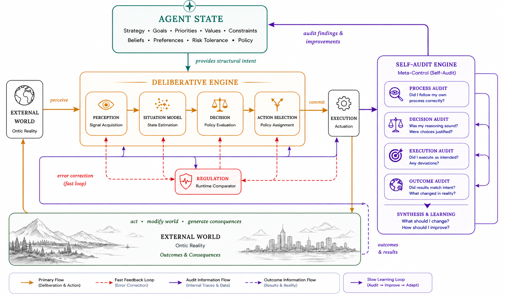

A self-management system understood as an adaptive control system — a reference architecture for the functional components every viable agent must implement.
Every person can be understood as an adaptive control system operating within a changing environment. Autoregia starts from that premise: rather than designing productivity tools from intuition or convention, it identifies the fundamental functional architecture that every viable agent must implement.
The method has three stages — model the agent control loop independently of any implementation; formalize the functional components that make an agent viable (perception, decision, execution, regulation, learning, identity); then map concrete personal systems onto those functions in order to analyze, engineer, and continuously improve personal agency.
The output is a reference architecture, not a prescription. Note-taking systems, task managers, calendars, and reflection practices are not independent solutions — they are concrete implementations of specific functions within a larger cybernetic architecture of agency.
Self-management is the praxis of constructing and sustaining that architecture, so that operative processes evolve from implicit, unexamined routines into explicit, intelligible, and systematically steerable structures.
Autoregia decomposes self-management into a set of cooperating systems, each mapped to a level of the Viable System Model. Some are materialized as dedicated tools developed in this workspace; others are satisfied by existing tools or documents.
An agent is a system that maintains its continued existence and pursues objectives through regulated interaction with an environment.
An agent is a system that deliberately transforms states of itself and its environment by selecting and executing actions according to internal objectives while regulating those actions using feedback.
| Component | Role |
|---|---|
| Identity | what persists through time |
| Objectives | desired future states |
| World | (Internal, External) |
| Internal State | beliefs, memory, resources, capabilities |
| Perception | acquisition of information |
| Decision | selection among alternatives |
| Action | modification of world or self |
| Feedback | observation of consequences |
| Regulation | correction of deviations |
| Learning | modification of internal models |
| Functional Problem | Description |
|---|---|
| Identity Maintenance | preserve the agent |
| Situation Assessment | understand environment |
| Goal Formation | determine desired future |
| Planning | generate possible actions |
| Resource Allocation | distribute limited resources |
| Coordination | synchronize concurrent activities |
| Execution | perform actions |
| Monitoring | observe progress |
| Regulation | compensate disturbances |
| Learning | improve future behavior |
The agent maintains two foundational model substrates — typed, declarative ontologies — that structure its perception, situation-assessment, and self-regulation. Both are sub-systems of the Agent State system and are generative: from their types they can derive recording templates and emit records into the PRS automatically.
| Foundation | Role | Sub-system of Agent State |
|---|---|---|
| World Model | Typed ontology of the external environment — entity types, relation types, event types, domains — that Perception reads and the Situation Model instantiates. | PWMS |
| Self Model | Typed model of the self — identity, capabilities, resources, beliefs, commitments — against which internal state is recorded and regulated. | PSMS |
| Policy | Normative direction, identity, principles, life-policy — the regulatory apparatus that writes its decisions into the Self Model. | PPS |
The agent control loop is an outer loop that closes the world on itself through the agent. It contains an inner Deliberative Cycle — the sense→decide arc that turns raw information into a committed action — followed by an Execution arc that carries the action out and a Feedback path that re-enters the cycle.
The Deliberative Cycle is the sub-loop spanning Perception → Situation Model → Decision → Action Selection: it observes the world, builds a state estimate, evaluates alternatives, and commits to an action. It does not act; it produces a selected action that the outer loop then executes.
| Stage | Loop | Role |
|---|---|---|
| Perception | Deliberative | acquire information from the internal and external world |
| Situation Model | Deliberative | integrate perception into a current state estimate |
| Decision | Deliberative | evaluate and choose among alternative courses of action |
| Action Selection | Deliberative | commit to a specific action or plan to carry out |
| Execution | Outer | carry out the selected action in the world or self |
| Feedback | Outer | observe consequences and regulate the Deliberative Cycle |
A Viable System Model (VSM) is a formal cybernetic model of the organizational structure required for an autonomous system to remain viable in a changing environment. It specifies the minimum set of interacting subsystems necessary to regulate operations, coordinate activities, adapt to environmental change, and preserve the identity and continuity of the system over time.
Where the agent control loop describes the temporal arc of agency — sense, decide, act, regulate — the Viable System Model describes its structural complement: the minimum set of interacting subsystems any viable system must implement to keep that loop running. Autoregia uses the VSM as its reference architecture, mapping every personal system to one of these functions.
| System | Name | Function |
|---|---|---|
| System 1 | Operational Units | The primary units that perform the agent's basic operations. Each unit is semi-autonomous and responsible for delivering specific outputs or services. |
| System 2 | Coordination | Ensures the harmonious operation of System 1 units by providing coordination and conflict resolution, managing the interactions and synergies between operational units. |
| System 3 | Control | Provides resource allocation, monitoring, and control over the operational units; ensures the system is functioning efficiently and effectively. |
| System 3* | Audit | A subset of System 3 focused on monitoring and auditing the operational units to ensure compliance and performance standards. |
| System 4 | Intelligence | Focuses on the external environment and future planning; adapts the system to environmental change, drives innovation and strategic development. |
| System 5 | Policy | Sets the system's overall goals, values, and direction; balances internal and external focus and maintains identity and cohesion. |
Autoregia decomposes self-management into a set of cooperating systems. Some are materialized as dedicated tools developed in this workspace; others are satisfied by existing tools or documents. Each maps to a level of the Viable System Model.
| System | Role | VSM Level |
|---|---|---|
| Agent State | Integrated self-regulation system: priority-setting, scheduling, day-to-day steering. Contains the agent's models and policy as sub-systems — PPS (policy), PWMS (world model), PSMS (self model) — and applies them to steer day-to-day. | S5 – Policy |
| Intelligence | Scan environment, synthesize, learn, anticipate | S4 – Intelligence |
| Documentation | External memory: explicit knowledge & decision records | S4 – Intelligence |
| Accounting | Track resource usage (time, money, energy, attention) | S3 – Audit / Accounting |
| Audit | Diagnostics, deviation detection, performance evaluation | S3 – Audit |
| Task Management | Organize action constructs (projects, tasks, routines) | S1 – Operations |
| Notification | Timely external triggers for commitments & events | S2 – Coordination |
| Coordination | Resolve conflicts, harmonize schedules, avoid overload | S2 – Coordination |
| Execution | Physical & cognitive tools used to perform work | S1 – Operations |
| Inventory | Registry of assets, capabilities, reference objects | S3 – Control |
The PVSM instantiates the agent control loop with concrete personal systems. The Deliberative Cycle is supplied by the recording, reflection, and planning instruments; the Execution arc is supplied by production tools; and Feedback closes the loop through reflection.
| Stage | Loop | PVSM Component |
|---|---|---|
| Perception | Deliberative | Personal Recording System (PRS), Audit Process |
| Situation Model | Deliberative | Reflection, Documentation |
| Decision | Deliberative | Task Registry Mechanism, Reflection |
| Action Selection | Deliberative | Calendar, Time Tracker |
| Execution | Outer | Production |
| Feedback | Outer | Reflection (Intelligence Layer) - Audit |
Two foundational model substrates underpin the control loop, making Perception and Situation Model possible. Together with the Policy system they form the Agent State — the structural/ontological layer that Perception reads, the Situation Model instantiates as a current state estimate, and policy governs. All three are generative: they can derive recording templates and emit automatic records into the PRS.
| Substrate | Role | Spec |
|---|---|---|
| World Model | Typed ontology of the external world — entity types, event types, relations, domains. PRS records instances of its types; the Situation Model is a current-state instance of its structure. Generative: can derive recording templates and emit records. | PWMS |
| Self Model | Typed model of the self — identity, capability, resource, belief, commitment, constraint. Provides the structural facets against which internal state is recorded and regulated. Generative: can derive introspection prompts and emit self-records. | PSMS |
| Policy | Normative apparatus — direction, identity, principles, life-policy. The regulatory sub-system that writes its decisions into the Self Model as identity/constraint/commitment facets. | PPS |

Conceptual questions about the model, with working answers. Tap a question to expand.